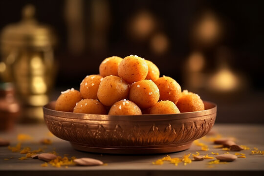
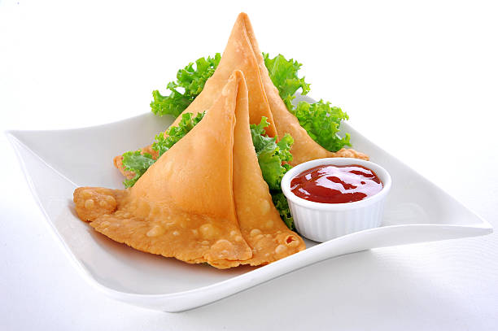

Adayar Anandha Bhavan
Pure Veg. Since - 1979
Menu for Sweets & Snacks
Laddu : These laddus are a great source of antioxidants that will help to reduce the free radicals in the body. Meaning, having a laddu might lower the chances of you catching heart diseases and more. The antioxidants in the laddu help fight cell damage and lower the risk of chronic diseases.
Making
- We make laddu by slow roasting gram flour in ghee until it turns aromatic and golden in color.
- This nutty mixture is cooled down
- And then mixed with powdered cardamoms and sugar.
- Toppings with cashews, pistachios and melon seeds as well.
| LADDU | RATINGS |
|---|---|
| 2019 | 4.0 /5 |
| 2021 | 4.0 /5 |
| 2023 | 4.0 /5 |
Samosa (veg) : Vegetable samosas can provide a good source of vitamins and minerals, like vitamin A and vitamin C. Baked or fried in healthy oil, like olive oil, samosas can be a low-fat snack option. Some samosa fillings, like potatoes, are a good source of fiber, which is important for digestive health.
Making
- Prepared with an all-purpose flour (locally known as maida) and stuffed with a filling,
- Mixture of diced and cooked or mashed boiled potato,
- Added with onions, green peas,
- Followed by stuffing lentils, ginger, spices and green chili.
- Finally the stuffed veggies is folded in triangle shape and fried in fresh coconut oil served with tomato sauce as dip
| SAMOSA | RATINGS |
|---|---|
| 2019 | 3.0 /5 |
| 2021 | 3.0 /5 |
| 2023 | 3.0 /5 |